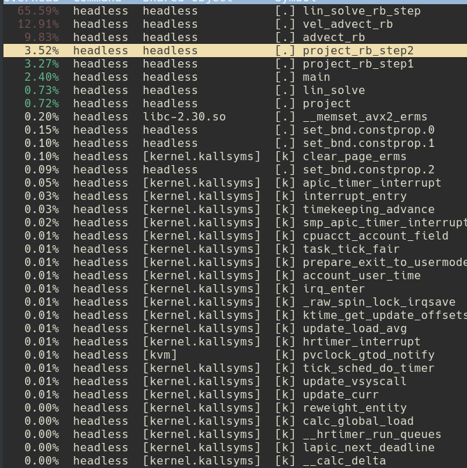
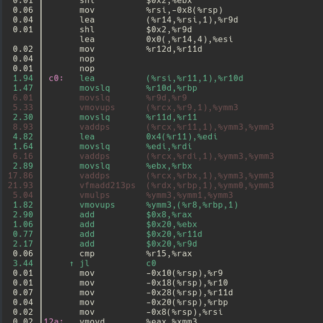

class: center, middle # Lab 2 - Vectorization Parallel Computing Mateo de Mayo - Benjamín Ocampo --- # Lab 1 Recalling to the first laboratory, the maximum perfomance we have got: - N = 128 steps = 512 - nanoseconds per cell = 221 - N = 512 steps = 128 - nanoseconds per cell = 232 - N = 2048 steps = 32 - nanoseconds per cell = 268 - N = 4096 steps = 16 - nanoseconds per cell = 267 - N = 8192 steps = 8 - nanoseconds per cell = 265 USE A PLOT. --- # What it remained under the table. Function *advect* is called twice in order to perform the function *vel_step*. Both of them called with u0 and v0 as parameters. ```c void vel_step(unsigned int n, float *u, float *v, float *u0, float *v0, float visc, float dt) { ... SWAP(u0, u); SWAP(v0, v); advect(n, VERTICAL, u, u0, u0, v0, dt); advect(n, HORIZONTAL, v, v0, u0, v0, dt); ... } ``` --- # What it remained under the table. If we get into the definition of advect: ```c static void advect(unsigned int n, boundary b, float *d, const float *d0, const float *u0, const float *v0, float dt) { int i0, i1, j0, j1; float x, y, s0, t0, s1, t1; float dt0 = dt * n; for (unsigned int i = 1; i <= n; i++) { for (unsigned int j = 1; j <= n; j++) { x = i - dt0 * u0[IX(i, j)]; y = j - dt0 * v0[IX(i, j)]; ... // compute i0, i1, j0, j1 by means of x and y. ... d[IX(i, j)] = s0 * (t0 * d0[IX(i0, j0)] + t1 * d0[IX(i0, j1)]) + s1 * (t0 * d0[IX(i1, j0)] + t1 * d0[IX(i1, j1)]); ``` *u0* and *v0* will be used to compute indexes *i0*, *i1*, *j0* and *j1* in order to update the array *d*. *x* an *y* are computed twice! --- # Before getting covered in mud In order to take advantage of *red-black* approach and its profits, the **solver.c** file was re-written Functions **advect** and **project** were re-written and the two expensive advect calls were changed to just one function call which updates *u* and *v*. --- ```c static void project(unsigned int n, float *u, float *v, float *u0, float *v0) { unsigned int color_size = (n + 2) * ((n + 2) / 2); float *redu = u; float *redv = v; float *blku = u + color_size; float *blkv = v + color_size; float *redu0 = u0; float *redv0 = v0; float *blku0 = u0 + color_size; float *blkv0 = v0 + color_size; project_rb_step1(n, RED, redu0, redv0, blku, blkv); project_rb_step1(n, BLACK, blku0, blkv0, redu, redv); set_bnd(n, NONE, v0); set_bnd(n, NONE, u0); lin_solve(n, NONE, u0, v0, 1, 4); project_rb_step2(n, RED, redu, redv, blku0); project_rb_step2(n, BLACK, blku, blkv, redu0); set_bnd(n, VERTICAL, u); set_bnd(n, HORIZONTAL, v); } ``` ```c static void advect(unsigned int n, boundary b, float *d, const float *d0, const float *u, const float *v, float dt) { unsigned int color_size = (n + 2) * ((n + 2) / 2); float *redd = d; const float *redu = u; const float *redv = v; float *blkd = d + color_size; const float *blku = u + color_size; const float *blkv = v + color_size; advect_rb(RED, n, redd, d0, redu, redv, dt); advect_rb(BLACK, n, blkd, d0, blku, blkv, dt); set_bnd(n, b, d); } ``` --- ```c static void project_rb_step1(unsigned int n, grid_color color, float *restrict sameu0, float *restrict samev0, float *restrict neighu, float *restrict neighv) { int shift = color == RED ? 1 : -1; unsigned int start = color == RED ? 0 : 1; unsigned int width = (n + 2) / 2; for (unsigned int i = 1; i <= n; ++i, start = 1 - start) { for (unsigned int j = start; j < width - (1 - start); ++j) { int index = idx(j, i, width); samev0[index] = -0.5f * (neighu[index - start + 1] - neighu[index - start] + neighv[index + width] - neighv[index - width]) / n; sameu0[index] = 0; } } } ``` ```c static void project_rb_step2(unsigned int n, grid_color color, float *restrict sameu, float *restrict samev, float *restrict neighu0) { int shift = color == RED ? 1 : -1; unsigned int start = color == RED ? 0 : 1; unsigned int width = (n + 2) / 2; for (unsigned int i = 1; i <= n; ++i, start = 1 - start) { for (unsigned int j = start; j < width - (1 - start); ++j) { int index = idx(j, i, width); sameu[index] -= 0.5f * n * (neighu0[index - start + 1] - neighu0[index - start]); samev[index] -= 0.5f * n * (neighu0[index + width] - neighu0[index - width]); } } } ``` --- ```c static void advect_rb(grid_color color, unsigned int n, float *samed, const float *d0, const float *sameu, const float *samev, float dt) { ... for (unsigned int i = 1; i <= n; i++, shift = -shift, start = 1 - start) { for (unsigned int j = start; j < width - (1 - start); j++) { int index = idx(j, i, width); unsigned int gridi = i; unsigned int gridj = 2 * j + shift + start; x = gridj - dt0 * sameu[index]; y = gridi - dt0 * samev[index]; ... unsigned int i0j0 = IX(j0, i0); unsigned int isblack = (j0 % 2) ^ (i0 % 2); unsigned int isred = !isblack; unsigned int iseven = (i0 % 2 == 0); unsigned int isodd = !iseven; unsigned int fstart = ((isred && iseven) || (isblack && isodd)); int fshift = isred ? 1 : -1; unsigned int i1j1 = i0j0 + width + (1 - fstart); unsigned int i0j1 = i0j0 + fshift * width * (n + 2) + (1 - fstart); unsigned int i1j0 = i0j0 + fshift * width * (n + 2) + width; samed[index] = s0 * (t0 * d0[i0j0] + t1 * d0[i1j0]) + s1 * (t0 * d0[i0j1] + t1 * d0[i1j1]); } } } ``` --- ```c static void vel_advect(unsigned int n, float *restrict u, float *restrict v, const float *restrict u0, const float *restrict v0, float dt) { unsigned int color_size = (n + 2) * ((n + 2) / 2); float *redu = u; float *redv = v; float *blku = u + color_size; float *blkv = v + color_size; const float *redu0 = u0; const float *redv0 = v0; const float *blku0 = u0 + color_size; const float *blkv0 = v0 + color_size; vel_advect_rb(RED, n, redu, redv, redu0, redv0, u0, v0, dt); vel_advect_rb(BLACK, n, blku, blkv, blku0, blkv0, u0, v0, dt); set_bnd(n, VERTICAL, u); set_bnd(n, HORIZONTAL, v); } ``` --- ```c static void vel_advect_rb(grid_color color, unsigned int n, float *restrict sameu, float *restrict samev, const float *sameu0, const float *samev0, const float *u0, const float *v0, float dt) { ... float dt0 = dt * n; for (unsigned int i = 1; i <= n; i++, shift = -shift, start = 1 - start) { for (unsigned int j = start; j < width - (1 - start); j++) { int index = idx(j, i, width); unsigned int gridi = i; unsigned int gridj = 2 * j + shift + start; x = gridj - dt0 * sameu0[index]; y = gridi - dt0 * samev0[index]; ... unsigned int i0j0 = IX(j0, i0); unsigned int isblack = (j0 % 2) ^ (i0 % 2); unsigned int isred = !isblack; unsigned int iseven = (i0 % 2 == 0); unsigned int isodd = !iseven; unsigned int fstart = ((isred && iseven) || (isblack && isodd)); int fshift = isred ? 1 : -1; unsigned int i1j1 = i0j0 + width + (1 - fstart); unsigned int i0j1 = i0j0 + fshift * width * (n + 2) + (1 - fstart); unsigned int i1j0 = i0j0 + fshift * width * (n + 2) + width; sameu[index] = s0 * (t0 * u0[i0j0] + t1 * u0[i1j0]) + s1 * (t0 * u0[i0j1] + t1 * u0[i1j1]); samev[index] = s0 * (t0 * v0[i0j0] + t1 * v0[i1j0]) + s1 * (t0 * v0[i0j1] + t1 * v0[i1j1]); } } } ``` --- <div align="center"> <h3>rb vs baseline</h3> </div> Comparison between the red-black code given at the beggining of the lab and new red-black version was called *baseline* on account of our new starting point. <div align="center"> <img src="ispc_graphs/nspcellgraph__rb __vs__baseline .png" alt="drawing" style="width:550px;"/> </div> --- <div align="center"> <img src="ispc_graphs/l1graph__rb __vs__baseline .png" alt="drawing" style="width:430px;"/> <img src="ispc_graphs/llcgraph__rb __vs__baseline .png" alt="drawing" style="width:430px;"/> </div> --- <div align="center"> <h3>lab1 vs baseline</h3> </div> PUT RESULTS --- # Different Paths: Instrinsics and ISPC Up to this point we needed to take different paths, one of us worked with *intrinsics* and the other one with *ispc*. Both of us tried to take the same approaches in order to compare how much performance we got with different paths. --- ## linsolve - ISPC ```c export void lin_solve_rb_step(uniform int color, uniform int n, uniform float a, uniform float c, const uniform float * uniform same0, const uniform float * uniform neigh, uniform float * uniform same) { ... for (uniform int y = 1; y <= n; y++, shift = -shift, start = 1 - start) { for (uniform int x = start; x < width - programCount; x+= programCount) { varying int index = x + programIndex + y * width; same[index] = (same0[index] + a * (neigh[index - width] + neigh[index] + neigh[index + shift] + neigh[index + width])) / c; } varying int xx = programIndex + width - programCount; if(xx < width - (1 - start)){ varying int index = xx + y * width; same[index] = (same0[index] + a * (neigh[index - width] + neigh[index] + neigh[index + shift] + neigh[index + width])) / c; } } } ``` --- <div align="center"> <h3>baseline vs linsolve</h3> </div> <div align="center"> <img src="ispc_graphs/nspcellgraph__baseline __vs__linsolve .png" alt="drawing" style="width:550px;"/> </div> --- <div align="center"> <img src="ispc_graphs/l1graph__baseline __vs__linsolve .png" alt="drawing" style="width:430px;"/> <img src="ispc_graphs/llcgraph__baseline __vs__linsolve .png" alt="drawing" style="width:430px;"/> </div> --- ## linsolve - intrinsics linsolve code --- <div align="center"> <h3>baseline vs linsolve</h3> </div> <div align="center"> <img src="intrinsics_graphs/nspcellgraph__baseline __vs__linsolve .png" alt="drawing" style="width:550px;"/> </div> --- <div align="center"> <img src="intrinsics_graphs/l1graph__baseline __vs__linsolve .png" alt="drawing" style="width:430px;"/> <img src="intrinsics_graphs/llcgraph__baseline __vs__linsolve .png" alt="drawing" style="width:430px;"/> </div> --- # Conclusions --- ## And Now What? We use the profiler to see what was the most expensive routine in the program. <div align="center">  </div> --- ## advect - ISPC ```c export void vel_advect_rb( ... ) { ... uniform float dt0 = dt * n; for (uniform int i = 1; i <= n; i++, shift = -shift, start = 1 - start){ for (varying int j = programIndex + start; j < width - (1 - start); j += programCount){ ... varying int index = j + i * width; varying int gridi = i; varying int gridj = 2 * j + shift + start; x = gridj - dt0 * sameu0[index]; y = gridi - dt0 * samev0[index]; x = clamp(x, 0.5f, n + 0.5f); y = clamp(y, 0.5f, n + 0.5f); ... sameu[index] = s0 * (t0 * u0[idx(j0, i0, n + 2)] + t1 * u0[idx(j0, i1, n + 2)]) + s1 * (t0 * u0[idx(j1, i0, n + 2)] + t1 * u0[idx(j1, i1, n + 2)]); samev[index] = s0 * (t0 * v0[idx(j0, i0, n + 2)] + t1 * v0[idx(j0, i1, n + 2)]) + s1 * (t0 * v0[idx(j1, i0, n + 2)] + t1 * v0[idx(j1, i1, n + 2)]); } } } ``` --- ## advect - ISPC ```c export void advect_rb( ... ){ ... for (uniform int i = 1; i <= n; i++, shift = -shift, start = 1 - start){ for (varying int j = programIndex + start; j < width - (1 - start); j += programCount){ ... varying int index = j + i * width; varying int gridi = i; varying int gridj = 2 * j + shift + start; x = gridj - dt0 * sameu[index]; y = gridi - dt0 * samev[index]; x = clamp(x, 0.5f, n + 0.5f); y = clamp(y, 0.5f, n + 0.5f); ... samed[index] = s0 * (t0 * d0[idx(j0, i0, n + 2)] + t1 * d0[idx(j0, i1, n + 2)]) + s1 * (t0 * d0[idx(j1, i0, n + 2)] + t1 * d0[idx(j1, i1, n + 2)]); } } } ``` --- <div align="center"> <h3> linsolve vs advect</h3> </div> <div align="center"> <img src="ispc_graphs/nspcellgraph__linsolve __vs__advect .png" alt="drawing" style="width:550px;"/> </div> --- <div align="center"> <img src="ispc_graphs/l1graph__linsolve __vs__advect .png" alt="drawing" style="width:430px;"/> <img src="ispc_graphs/llcgraph__linsolve __vs__advect .png" alt="drawing" style="width:430px;"/> </div> --- ## advect - Intrinsics intrinsics code --- <div align="center"> <h3> linsolve vs advect</h3> </div> <div align="center"> <img src="intrinsics_graphs/nspcellgraph__linsolve __vs__advect .png" alt="drawing" style="width:550px;"/> </div> --- <div align="center"> <img src="intrinsics_graphs/l1graph__linsolve __vs__advect .png" alt="drawing" style="width:430px;"/> <img src="intrinsics_graphs/llcgraph__linsolve __vs__advect .png" alt="drawing" style="width:430px;"/> </div> --- ## Conclusions --- ## Perf report after advect vectorization <div align="center"> </div> --- ## We got an improvement! Nevertheless... <div align="center"> <img src="perf/advectgatthers.png" alt="advectgatthers" style="width:500px"/> </div> --- ## project - ISPC ```c export void project_rb_step1( ... ) { ... for (uniform unsigned int i = 1; i <= n; ++i, start = 1 - start) { uniform unsigned int j = start; for (j = start; j < width - programCount; j+=programCount) { varying int index = (j + programIndex) + i * width; samev0[index] = -0.5f * (neighu[index - start + 1] - neighu[index - start] + neighv[index + width] - neighv[index - width]) / n; sameu0[index] = 0; } varying unsigned int jj = programIndex + j; if(jj < width - (1 - start)){ varying int index = jj + i * width; samev0[index] = -0.5f * (neighu[index - start + 1] - neighu[index - start] + neighv[index + width] - neighv[index - width]) / n; sameu0[index] = 0; } } } ``` --- ## project - ISPC ```c export void project_rb_step2( ... ) { ... for (uniform unsigned int i = 1; i <= n; ++i, start = 1 - start) { uniform unsigned int j = start; for (j = start; j < width - programCount; j+=programCount) { varying int index = (j + programIndex) + i * width; sameu[index] -= 0.5f * n * (neighu0[index - start + 1] - neighu0[index - start]); samev[index] -= 0.5f * n * (neighu0[index + width] - neighu0[index - width]); } varying unsigned int jj = programIndex + j; if(jj < width - (1 - start)){ varying int index = jj + i * width; sameu[index] -= 0.5f * n * (neighu0[index - start + 1] - neighu0[index - start]); samev[index] -= 0.5f * n * (neighu0[index + width] - neighu0[index - width]); } } } ``` --- <div align="center"> <h3> advect vs project </h3> </div> <div align="center"> <img src="ispc_graphs/nspcellgraph__advect __vs__project .png" alt="drawing" style="width:550px;"/> </div> --- <div align="center"> <img src="ispc_graphs/l1graph__advect __vs__project .png" alt="drawing" style="width:430px;"/> <img src="ispc_graphs/llcgraph__advect __vs__project .png" alt="drawing" style="width:430px;"/> </div> --- # project - Intrinsics project code --- <div align="center"> <h3> advect vs project </h3> </div> <div align="center"> <img src="intrinsics_graphs/nspcellgraph__advect __vs__project .png" alt="drawing" style="width:550px;"/> </div> --- <div align="center"> <img src="intrinsics_graphs/l1graph__advect __vs__project .png" alt="drawing" style="width:430px;"/> <img src="intrinsics_graphs/llcgraph__advect __vs__project .png" alt="drawing" style="width:430px;"/> </div> --- ## Conclusions --- ## The real problem was linsolve <div align="center"> <img src="perf/project.png" alt="drawing" style="width:450px;"/> </div> --- ## The real problem was linsolve <div align="center">  </div> --- ## Two heuristics: - Blocking - Reduce the number of reads --- ## Blocking - ISPC ```c export void lin_solve_rb_step( ... ){ ... uniform int tile_width = 2*programCount; // Multiple of programCount uniform int tile_height = 2; uniform int N = (int)n; for(uniform int ty = 1; ty <= N; ty += tile_height) { for(uniform int tx = 0; tx < width - tile_width; tx += tile_width) { for(uniform int yy = 0; yy < tile_height; ++yy, start = 1 - start){ for(uniform int xx = start; xx < tile_width + start; xx+=programCount){ varying int index = (xx + tx + programIndex) + (ty + yy) * width; same[index] = (same0[index] + a * (neigh[index - width] + neigh[index - start] + neigh[index - start + 1] + neigh[index + width])) * invc; } } } } // The last block must be updated separately ... } ``` --- <div align="center"> <h3> project vs blocks </h3> </div> <div align="center"> <img src="ispc_graphs/nspcellgraph__project __vs__blocks .png" alt="drawing" style="width:550px;"/> </div> --- <div align="center"> <img src="ispc_graphs/l1graph__project __vs__blocks .png" alt="drawing" style="width:430px;"/> <img src="ispc_graphs/llcgraph__project __vs__blocks .png" alt="drawing" style="width:430px;"/> </div> --- ## Blocking - Intrinsics blocks code --- <div align="center"> <h3> project vs blocks </h3> </div> <div align="center"> <img src="intrinsics_graphs/nspcellgraph__project __vs__blocks .png" alt="drawing" style="width:550px;"/> </div> --- <div align="center"> <img src="intrinsics_graphs/l1graph__project __vs__blocks .png" alt="drawing" style="width:430px;"/> <img src="intrinsics_graphs/llcgraph__project __vs__blocks .png" alt="drawing" style="width:430px;"/> </div> --- ## Conclusions --- ## shload - ISPC ```c export void lin_solve_rb_step( ... ) { ... for (uniform int y = 1; y <= n; y++, start = 1 - start) { varying int index_left = programIndex + y * width; varying float left = neigh[index_left]; uniform int x; for (x = start; x < width - programCount; x += programCount){ varying int index_next_left = programCount + index_left; varying float next_left = neigh[index_next_left]; varying float right = insert( shift(left, 1), programCount - 1, extract(next_left, 0) ); varying int index = (x + programIndex) + y * width; same[index] = (same0[index] + a * (neigh[index - width] + left + right + neigh[index + width])) * invc; left = next_left; index_left = index_next_left; } ... } } ``` --- <div align="center"> <h3> project vs shload </h3> </div> <div align="center"> <img src="ispc_graphs/nspcellgraph__project __vs__shload .png" alt="drawing" style="width:550px;"/> </div> --- <div align="center"> <img src="ispc_graphs/l1graph__project __vs__shload .png" alt="drawing" style="width:430px;"/> <img src="ispc_graphs/llcgraph__project __vs__shload .png" alt="drawing" style="width:430px;"/> </div> --- ## shload - Intrinsics shload code --- <div align="center"> <h3> project vs shload </h3> </div> <div align="center"> <img src="intrinsics_graphs/nspcellgraph__project __vs__shload .png" alt="drawing" style="width:550px;"/> </div> --- <div align="center"> <img src="intrinsics_graphs/l1graph__project __vs__shload .png" alt="drawing" style="width:430px;"/> <img src="intrinsics_graphs/llcgraph__project __vs__shload .png" alt="drawing" style="width:430px;"/> </div> --- ## Expensive shuffles <div align="center"> <img src="perf/shload.png" alt="drawing" style="width:450px;"/> </div> --- ## Conclusions --- --- ## Using icc compiler - ISPC results --- ## Using icc compiler - Intrinsics results <div align="center"> <img src="intrinsics_graphs/nspcellgraph__project __vs__icc .png" alt="drawing" style="width:550px;"/> </div> --- <div align="center"> <img src="intrinsics_graphs/l1graph__project __vs__icc .png" alt="drawing" style="width:430px;"/> <img src="intrinsics_graphs/llcgraph__project __vs__icc .png" alt="drawing" style="width:430px;"/> </div> --- ## Things that ended under the table ---